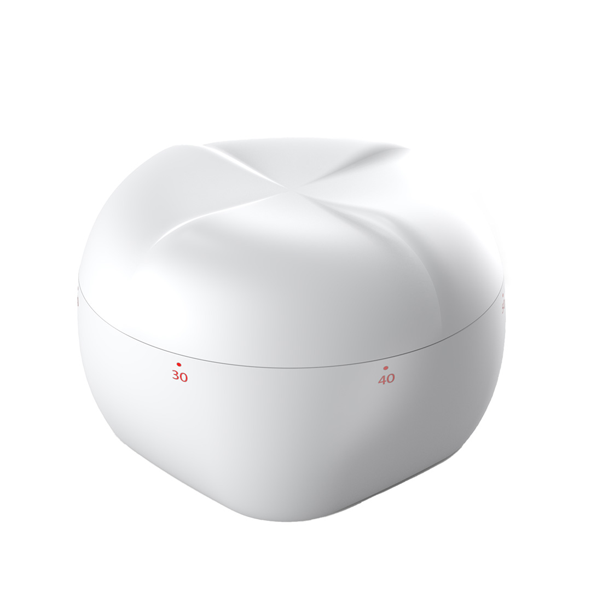
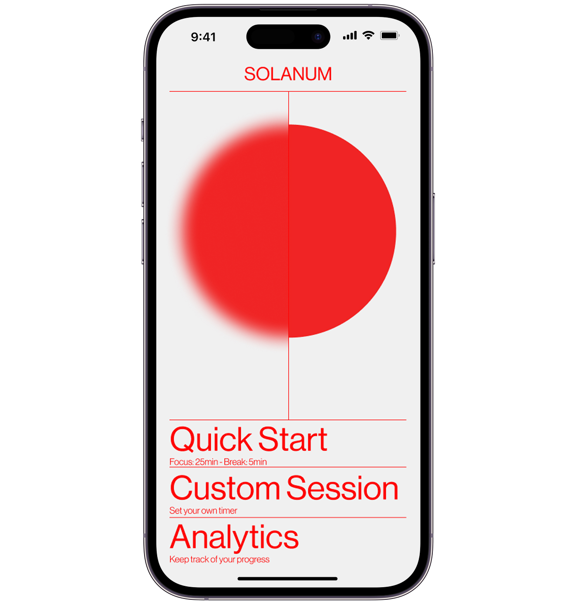
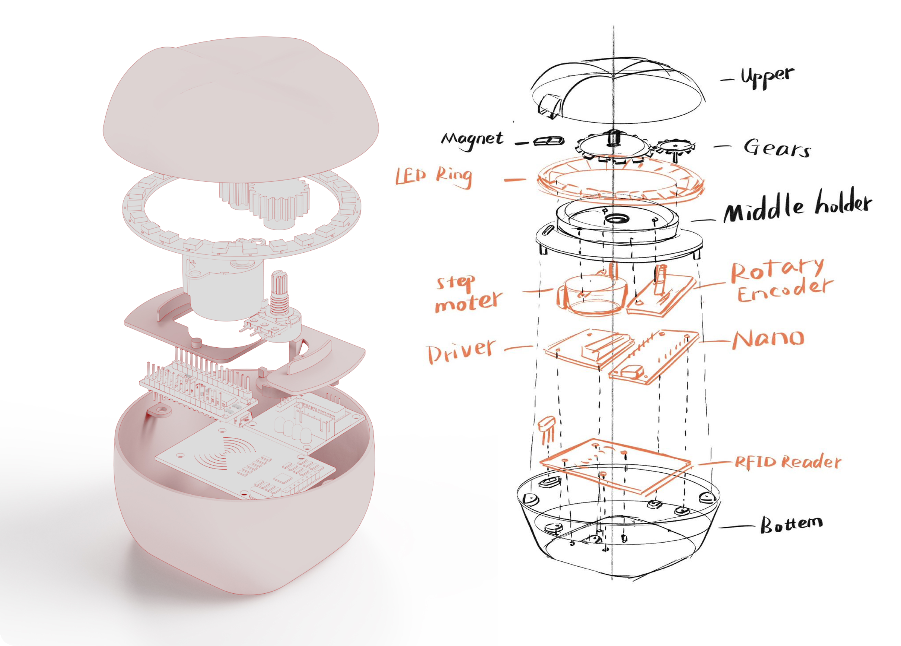

design process
Prototype


The prototyping phase involved significant iteration and challenges, including fitting all components into a compact form and designing a simple yet effective gear system to enable rotation.
The app interface was designed to be intuitive and user-friendly, with a focus on simplicity and ease of use. The app allows users to set timers, track progress, and view analytics.